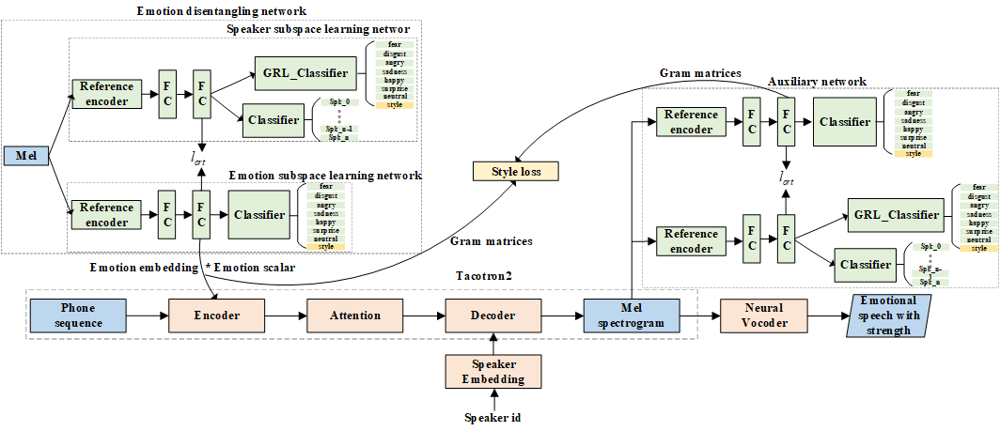

Controllable Emotion Transfer For End-to-End Speech Synthesis
Abstract:
In this paper, we discussed emotion transfer and strength control in the cross-speaker scenario, which aims to capture the emotional representation from the references of the source speaker and transfer it to the target speaker who does not have emotional data, so that it can express various emotions with different strengths. However, the current methods made a compromise on the quality of emotion transfer, either transferred emotion in the synthetic speech is not expressive enough, or there is often suffering from the source speaker leakage, which impairs the timbre identity of the target speaker. Moreover, it is hard to select the appropriate reference to flexibly perform different emotion strengths by the target speaker while ensuring the model robust to source speaker leakage. To solve the above issues, we use the same-speaker model proposed before as the backbone and improve it to disentangling emotion expression and speaker's timbre base on multi-reference structure combined with domain separation and adversarial training (DAT). Specifically, we designed a speaker subspace learning network with a gradient reversal layer, which is used to expand the emotion embedding network and auxiliary learning network to learn emotion-independent speaker representations from the mel-spectrum. And then, the orthogonality loss is used between the speaker representation and the emotion embedding to obtain the speaker-independent emotion embedding. Finally, we adopt style loss to measure the difference of speaker-independent emotion embedding between the generated and reference mel-spectrum. The emotion strength in the synthetic speech can be controlled by adjusting the value of the emotion embedding as the emotion embedding can be viewed as the feature map of the mel-spectrum. Experiments and objective analysis have shown that the speech synthesized by our method not only ensures the stability of the target speaker's timbre characteristics but also enriches transferred emotional expression. The emotion strength controlled by the new speaker is more salient to listeners. As far as we know, this is the first study to transferring emotion across speakers while control emotion strength.
1. The architecture of the proposed model:

2. Demo of style transfer for emotional TTS :
To facilitate fair comparison, we use the same text to synthesize speech in six emotions. This may let the listeners more focused on the emotion delivered in the acoustic aspects. The text is (in Chinese): 让那些小主顾们等一等到吧。
emotion
Reference audio
Prosody Tacotron
+ Lcls_src
+ Lcls_tgt
+ Lcls_src + Lcls_tgt
Ltotal
surprise
happy
sad
angry
disgust
fear
3. Demo of emotion strength control in emotional TTS :
To facilitate fair comparison, we use the same text to synthesize speech in six emotions and three strengths. This may let the listeners more focused on the emotion delivered in the acoustic aspects. The text is (in Chinese): 让那些小主顾们等一等到吧。